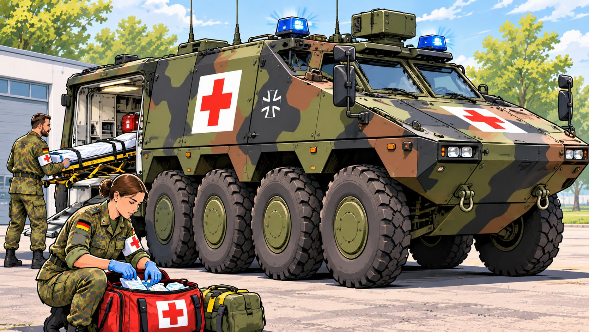

Militärische Nachrichten · A2–B109 – Neue Rettungsfahrzeuge für den Sanitätsdienst
Nachrichtentext anzeigen
Der Sanitätsdienst der Bundeswehr hat zwölf neue geschützte Sanitätsfahrzeuge vom Typ BOXER erhalten. Die gepanzerten Radfahrzeuge ermöglichen den Transport und die medizinische Versorgung von Verwundeten auch unter schwierigen Einsatzbedingungen. Dank ihrer acht Räder können sie sich auch in unwegsamem Gelände gut fortbewegen. Die Fahrzeuge bieten der Besatzung und den Patienten Schutz vor Beschuss und Explosionen. Je nach Ausstattung können bis zu drei liegende oder sieben sitzende Patienten transportiert werden. Die Fahrzeuge verfügen unter anderem über moderne Beatmungsgeräte, Sauerstoffflaschen und medizinische Überwachungsgeräte. In den kommenden sechs Wochen werden Fahrer und medizinisches Personal an den neuen Fahrzeugen ausgebildet. Dabei geht es sowohl um die Bedienung der technischen Geräte als auch um die Versorgung von Patienten während der Fahrt. Anschließend sollen die Fahrzeuge an verschiedenen Standorten in Deutschland eingesetzt werden.